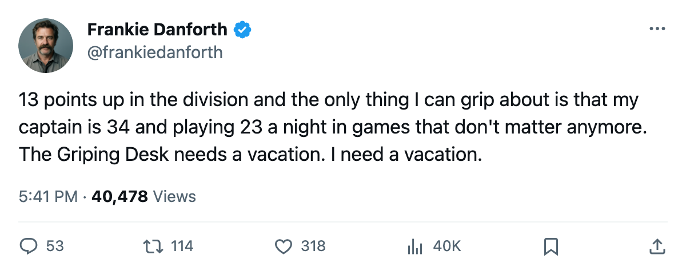
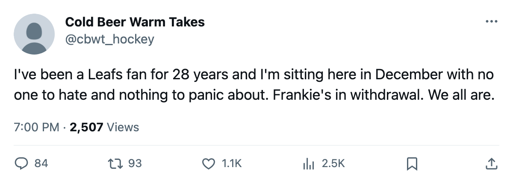

MTL
MTLDANFORTH: Code Green, 13 points clear, and the only thing left to worry about is January
The division crown is decided. The Griping Desk has to find a new problem, and it found one in Newark.
 Frankie DanforthColumnist · Queen City Telegram
Frankie DanforthColumnist · Queen City Telegram
Code Green

Thirteen points. That's the gap between Toronto and Boston with 2 games in hand for  Boston Bruins. The Northeast is done. I have been writing about the division race since October, calling it a two-team race in mid-November, softening to a three-team race when Buffalo briefly looked alive, and now I am writing that it is over with 45 games left. I don't like it. A race gives me something to panic about, and right now the Panic Meter has nothing to work with.
Boston Bruins. The Northeast is done. I have been writing about the division race since October, calling it a two-team race in mid-November, softening to a three-team race when Buffalo briefly looked alive, and now I am writing that it is over with 45 games left. I don't like it. A race gives me something to panic about, and right now the Panic Meter has nothing to work with.
The numbers make it simple.  Toronto Maple Leafs sits at 59 points in 37 games. Boston has 46 in 35. Montreal has 39 in 36. The Leafs have lost 7 games and 1 in overtime. They are 13-2 on the road. I called the away record nobody forecast in a headline two weeks ago, and since then they added a 5-3 win at Calgary and a 6-1 blowout at Edmonton to the road column. The fourth line I have called a tax since October is getting real minutes from Petr Chlup87, who has 30 points in 37 games at 20.6 minutes a night, and
Toronto Maple Leafs sits at 59 points in 37 games. Boston has 46 in 35. Montreal has 39 in 36. The Leafs have lost 7 games and 1 in overtime. They are 13-2 on the road. I called the away record nobody forecast in a headline two weeks ago, and since then they added a 5-3 win at Calgary and a 6-1 blowout at Edmonton to the road column. The fourth line I have called a tax since October is getting real minutes from Petr Chlup87, who has 30 points in 37 games at 20.6 minutes a night, and  Brad Richards87, who has 26 points at 12.1 minutes a night and still somehow bothers me.
Brad Richards87, who has 26 points at 12.1 minutes a night and still somehow bothers me.
What does this team do for the next month? The division is decided. The conference race, against  New Jersey Devils at 51 points in 33 games and
New Jersey Devils at 51 points in 33 games and  Dallas Stars at 53 in 38, is a conversation that doesn't start until March. The next 45 games are mostly noise. And noise makes teams careless. Noise makes goaltenders rest too much, makes coaches dress 13 forwards when they should dress 12, makes a 34-year-old captain log 23.4 minutes a night because nobody wants to give him a rest week in January.
Dallas Stars at 53 in 38, is a conversation that doesn't start until March. The next 45 games are mostly noise. And noise makes teams careless. Noise makes goaltenders rest too much, makes coaches dress 13 forwards when they should dress 12, makes a 34-year-old captain log 23.4 minutes a night because nobody wants to give him a rest week in January.
 Mats Sundin92 is 34. He has 31 points in 37 games and a contract that runs 4 more years at $8.40M. I trust him. I also watched him skate 23.4 minutes a night against a bottom-six line from the Calgary organisation, and I know what 80 more minutes of that looks like in April.
Mats Sundin92 is 34. He has 31 points in 37 games and a contract that runs 4 more years at $8.40M. I trust him. I also watched him skate 23.4 minutes a night against a bottom-six line from the Calgary organisation, and I know what 80 more minutes of that looks like in April.
The only thing standing between Toronto and a month of meaningless wins is New Jersey, twice on January 3 and 4. New Jersey has 51 points in 33 games, 7 straight wins, and a 13-3 road record. After that, the calendar offers Boston at home on January 7, Pittsburgh on January 9, and a stretch of teams below .500 through the end of the month. Real tests come in February and March. This team will spend 6 weeks beating bad teams in empty buildings.
I want the 4th-line tax collected in the form of a rest night for my captain before February. I want to see Chlup at 18 minutes instead of 20.6, because 20.6 minutes a night at 19 is how a 19-year-old ends March dead on his legs. I want  Roberto Luongo95 to play 55 games, not 70, because the Conn Smythe trophy he won last June sits on his shelf and the Vezina sits on
Roberto Luongo95 to play 55 games, not 70, because the Conn Smythe trophy he won last June sits on his shelf and the Vezina sits on  Mighty Ducks of Anaheim's, and the only way this club repeats is if the goaltending holds.
Mighty Ducks of Anaheim's, and the only way this club repeats is if the goaltending holds.
Code Green. The division is done, the road record is absurd, and the only thing that keeps me honest is that January is long and a team with nothing to chase plays loose hockey.

